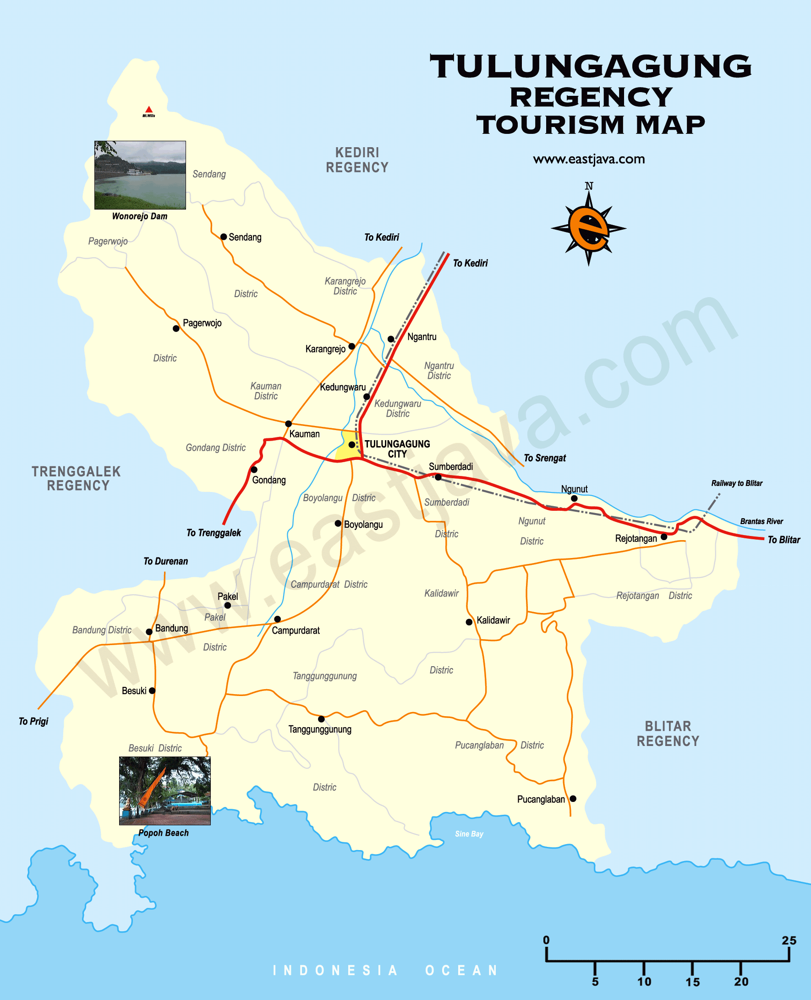

Tulungagung
Tulungagug is a city with its own distinct character, culture, and unique features that make it an interesting place to discover.

A Place I Call Home
Tulungagung is one of the regencies located in East Java Province, Indonesia. It is situated in the southern part of East Java and is known for its combination of urban and rural areas, mountainous regions, and coastal areas. This geographical diversity gives Tulungagung a variety of characteristics and makes it an interesting place to explore.
One of the distinctive features of Tulungagung is its natural beauty. The regency has many beaches along its southern coastline, including Popoh Beach, Gemah Beach, Sine Beach, and many others. In addition to its beaches, Tulungagung also has hills and mountainous areas that offer beautiful natural scenery. This diversity of landscapes gives Tulungagung significant potential in the tourism sector.
Tulungagung is also known as one of the marble producing regions in Indonesia. The marble industry has become an important part of the region's economic identity and has developed over many years, particularly in Besole and its surrounding areas. Marble from Tulungagung is not only used to meet local demand but has also become one of the region's leading products. From a cultural perspective, Tulungagung has various traditional arts and customs that are part of the local community's way of life and one of them is jaranan.